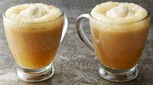

Butterbeer

Description
A beverage which not only looks great, but feels great. It has a unique taste and is excellent to have while you kickback, relax and stream the Harry Potter movies for the n-th time! 50 points to Griffindor!
Ingredients
- 1 cup light or dark brown sugar
- 2 tablespoons water
- 6 tablespoons butter
- 1/2 teaspoon salt
- 2 teaspoon cider vinegar
- 3/4 cup heavy cream, divided
- 1/2 teaspoon rum extract
- 4 (12 oz) bottle cream soda
Steps
- In a small saucepan over medium heat, combine the brown sugar and water. Bring to a gentle boil and cook, stirring often, until the mixture reads 240°F on a candy thermometer.
- Stir in the butter, salt, vinegar and 1/4 of the heavy cream. Set aside to cool to room temperature.
- Once the mixture has cooled, stir in the rum extract.
- In a medium bowl, combine 2 tablespoons of the brown sugar mixture and the remaining 1/2 cup of heavy cream. Use an electric mixer to beat until just thickened, but not completely whipped, about 2 to 3 minutes.
- To serve: divide the brown sugar mixture between 4 tall glasses (about 1/4 cup for each glass). Add 1/4 cup of cream soda to each glass, then stir to combine. Fill each glass nearly to the top with additional cream soda, then spoon the whipped topping over each.
Back to main